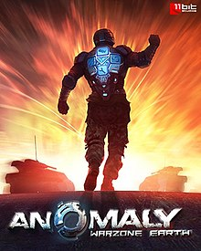

Oyun, uzaylı bir uzay gemisinin bazı bölümlerinin Bağdat ve Tokyo da dahil olmak üzere dünyanın dört bir yanındaki birçok büyük şehre zorunlu iniş yaptığı yakın bir gelecekte geçiyor .
Oyuncu, enkazın çevresinde meydana gelen anormallikleri araştırmak ve etkilenen bölgelerde neler olup bittiği hakkında bilgi toplamak için gönderilen bir zırhlı taburun (hikayede "14. Takım" olarak anılır) komutanı rolünü üstlenir. Anomaliler, radar ve uydu görüntülerini engelliyor ve anomalilerin etki alanı içinde var olabilecek tehditleri etkisiz hale getiriyor.
Oynanış tarzı "ters kule savunması ", [7] "kule saldırısı", [8] ve "kule saldırısı" olarak tanımlanmıştır. [9] Oyuncular, imha edilmesi gereken çeşitli savunma kuleleri tarafından korunan, düşmüş bir uzaylı uzay aracının bölümleri etrafındaki anormallikleri araştıran bir araç konvoyunu kontrol ediyor. [10] Oyuncular konvoydaki araçları doğrudan kontrol etmezler, bunun yerine konvoyun şehir sokaklarında izleyeceği yolları belirlerken aynı zamanda konvoyun hayatta kalmasına yardımcı olmak için tuzak veya sis perdesi gibi güçlendirmeler bırakırlar. Ek olarak, oyuncular konvoyu oluşturmak için çeşitli saldırı ve savunma özelliklerine sahip bir dizi farklı birim satın alabilir ve donatabilirler.
Windows, Mac, Linux ve XBLA sürümlerinde oyuncular, konvoy için güçlendirmeleri alıp bırakmak için kullandıkları bir yaya askeri (Komutan olarak adlandırılır) doğrudan kontrol eder. İOS ve Android sürümleri, dokunmatik tabanlı arabirimi kullanarak doğrudan güç veren oynatıcı yerine Komutanı çıkarır. Ek olarak, iOS ve Android sürümleri Tokyo'da belirlenen seviyelere sahip değildir.